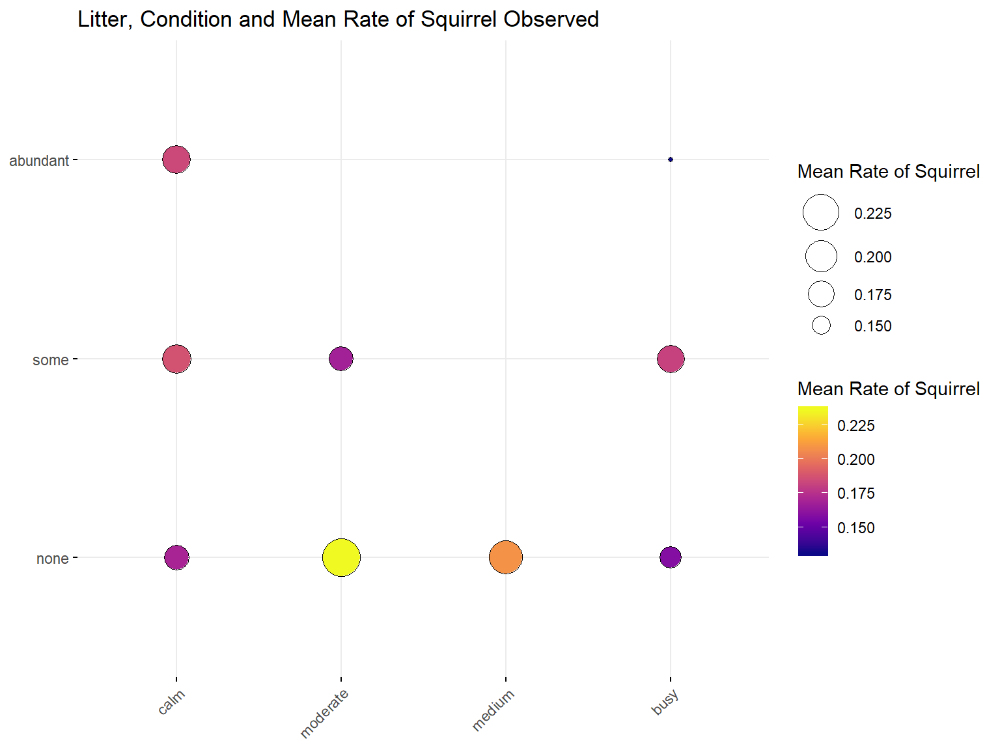
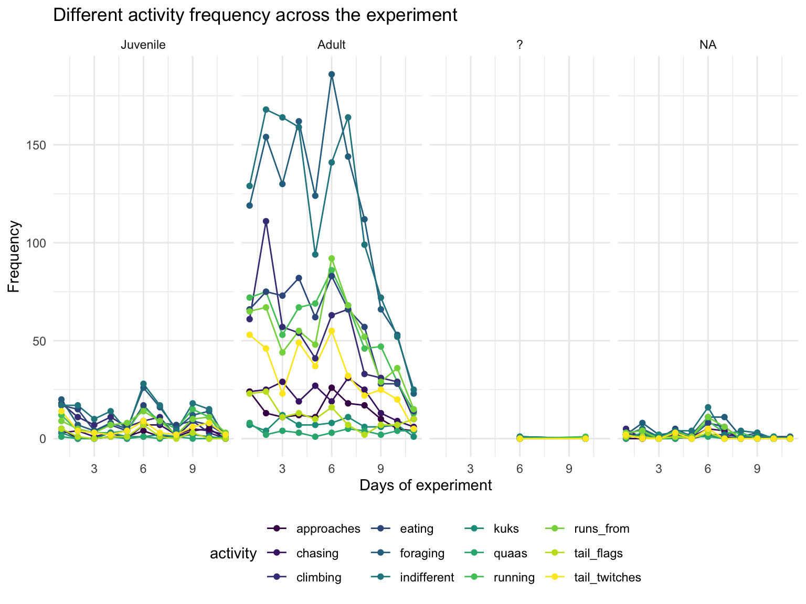

Squirrels have always served as a needed source of entertainment in Central Park. Other rodents’ population has been well traced and documented, but not always for the squirrels. However, the necessity of mapping the total population of squirrels in Central Park is observed as it depicts the squirrels’ size and growth. Such information is highly relevant to evaluating the squirrel population as a source of entertainment, as well as their potential of harboring and delivering pathogens to humans.
In this project, we use The Squirrel Census data from NYC Open Data host, which focuses on Eastern gray species specifically. For this project, we aim at depicting a full picture of the current squirrels community in Central Park, with regards to their demographics statistics as well as their living status. We also intend to assess their performance and activity in Central Park, by evaluating their interactions with humans and potential predators.
We believe this project can provide evidence-based information for the Central Park Squirrel community and contribute to better evaluation and regulation of the Squirrel population in Central Park. This project also has the potential in providing further management insights for the planning and designing aspect of the Central Park.
In this project, we aimed to examine factors associated with the distribution of the squirrel population in Central Park as well as factors that may be important in predicting certain squirrel behaviours and squirrel-human/predator interactions. Our last aim was to predict and visualize different behaviour pattern of the squirrels. We therefore proposed the following research questions:
How does squirrel fur color change throughout different hectares in Central park?
What factors affect squirrel distribution in Central Park? If any association exists, how can we visualize it?
How does temperature affect the number of squirrels observed?
How can we predict and visualize squirrel’s behaviour and/or their interaction with humans/predators based on ambient environment and temperature?
2018 Central Park Squirrel Census - Squirrel data contains 3023 squirrels’ information, including location coordinates, age, primary and secondary fur color, elevation, activities, communications, and interactions between squirrels and their predators or humans.
2018 Central Park Squirrel Census - Hectare Data contains environmental data for the 350 “countable” hectares in Central Park, including temperature, litter, noise, animals besides of squirrels sighted, and human density.
We downloaded the data from the web and called them squirrel and hectare.
There are three types of fur colors for squirrels observed in the park, and the table shows the number of adult and juvenile squirrels with different fur colors. There are 158 squirrels lacking information on fur colors.
| Age_group | Black | Cinnamon | Gray |
|---|---|---|---|
| Adult | 92 | 326 | 2125 |
| Juvenile | 8 | 58 | 256 |
For easier analysis on the two datasets, we created following new variables:
temperature_fehrenheit : temperatures for different time during a day.
rate: the number of squirrels in each hectare observed by sighters per minute.
temperature_category : there are five categories for temperatures, “below 50”, “50-60”, “60-70”, “above 70”, “others”.
noninteraction: total squirrels’activity count for running, chasing, climbing, eating and foraging.
interaction : total activity count for interaction between squirrels and predators or human, including kukking, quaasing, tail flags, tail twitching, being indifferent and running away.
The boxplot described the relationship between temperature and rate of squirrel observed
During the study period (10/7/2018-10/19/2018), the temperatures’ range is between 50 and 70 degrees Fahrenheit.Below 50 degrees Fahrenheit, the number of squirrels observed drastically declined. Above 50, the change on rate of squirrel observed is not significant.
The bubble plot describes how conditions affect the rate of squirrel with different levels of litter amount

The amount of litter and noise levels in the environment did not affect squirrel distribution much; however, when there was an abundant amount of litters and high level of noise in the environment, the number of squirrels at the lowest.
This partially aligns with our expectations that squirrels stay away from the crowds and occupied areas but why other levels of litter and noise did not affect the number of squirrels as much worths further investigation.
This graph indicates the total activity frequency for juvenile and adult squirrels during study period. The activity includes non-interative and interative with predators or human.

Generally, the activity frequency is significantly higher among adult squirrels than juvenile.
This graphs show the frequency of squirrel’s non-interative and interative activities with predactors or human in the park.
Overall, non-interative activity counts were higher than interactive activity counts for the whole study period.There was an obvious decreasing trend on both activity counts during the last few days.
From the boxplot and bubble plot above we can roughly see the relationship between the rate of squirrel observed and temperature, litter and hectare conditions. After filtering the missing values in “litter” and “hectare_conditions”, we fit a linear regression model to formally test for these associations.
\[ Rate \ of \ Squirrel \ Observed \sim \beta_0 + \beta_1 temperature + \beta_2 litterSome + \beta_3 litterAbundant +\beta_4 conditionsModerate +\beta_5 conditionsMedium +\beta_6 conditionsBusy + \varepsilon_i,\]
| term | estimate | p.value |
|---|---|---|
| (Intercept) | 0.058 | 0.075 |
| temperature_fahrenheit | 0.002 | 0.000 |
| litterSome | 0.015 | 0.272 |
| litterAbundant | -0.012 | 0.688 |
| hectare_conditionsModerate | 0.023 | 0.500 |
| hectare_conditionsMedium | 0.069 | 0.647 |
| hectare_conditionsBusy | -0.020 | 0.154 |
Different from the boxplot, instead of temperature category, we use the continuous variable temperature_fahrenheit in the model because we want to make full use of the dataset and increase the power of the hypothesis test. Consistent with the boxplot above, we have enough evidence to claim that there would be more squirrels observed when temperature is higher, at 5% level of significance.
The negative estimates of litterAbundant and hectare_conditionsBusy indicate that when litter is abundant and there is a high level of noise in the hectare, there will be least squirrels observed within every sighting time unit, which is also consistent with the visualization above. However, the amount of litter and level of noise are not significantly associated with rate of squirrel observed, which may be due to small sample size and the presence of missing values.
It is interesting to see how various factors including temperature, park condition, influence both squirrel’s own behaviours as well as their interactions with the external environment (including humans and potential predators).
A few limitations of this dataset worth mentioning here. The overall sample size was small making stratified analysis difficult. We therefore did not perform analysis on specific squirrel activity and could not comment on how the predictors of interest (temperature, condition) here will independently affect each activity of interest. In addition, all data was only collected for 11 days over a period of two consecutive weeks and the temperatures did not vary as much making our conclusion on the association between temperature and squirrel distribution less convincing. A followup problem from this is that we were not able to make any inference about change in squirrel’s behaviours based on several predictors tested as our samples were limited and were best represent the squirrel population in Central Park. To our knowledge, there was only one other squirrel census conducted previously in Atlanta, our analysis based on data collected in 2018 provides the most up-to-date information on squirrel behaviors and their interactions with the environment, humans, and other predators. We therefore believe that our attempt to discover factors associated with squirrel distribution or squirrel behaviours still gave some interesting findings. However, to draw a more definitive conclusion, further investigation on significant predictors of squirrel behaviour patterns should be conducted on wider squirrel populations that span wider geographic areas with longer observation period.